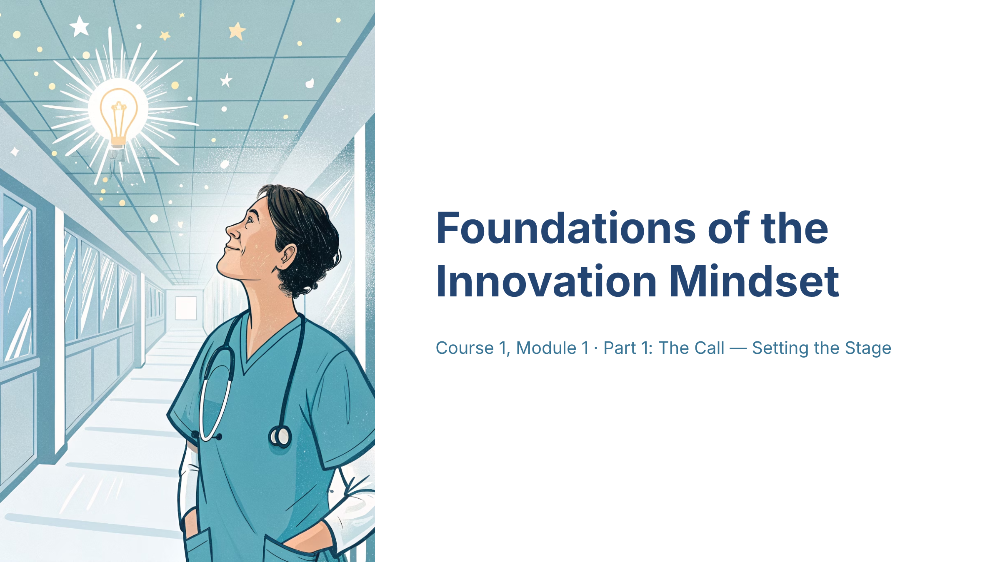
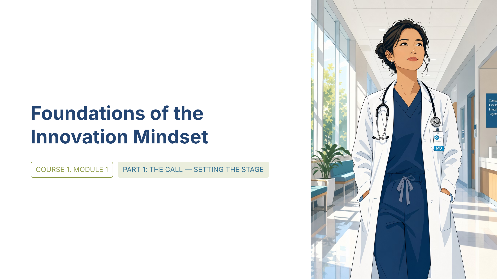
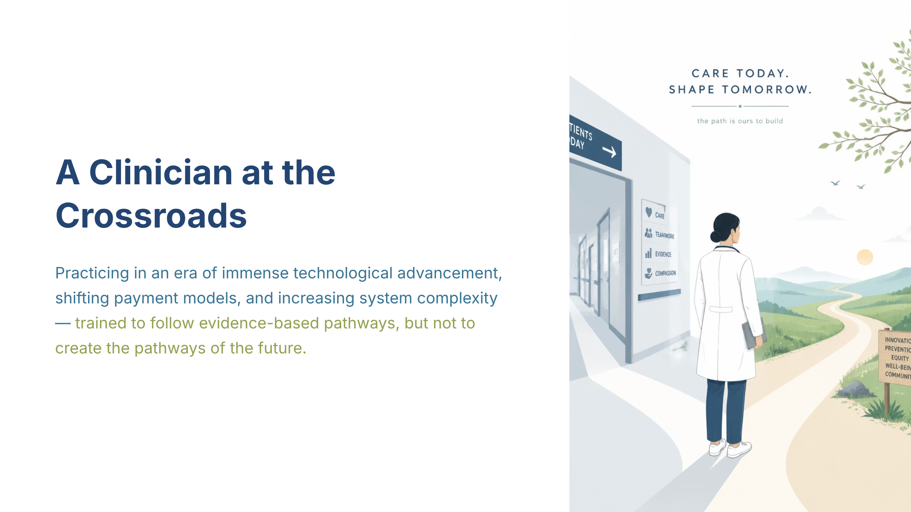
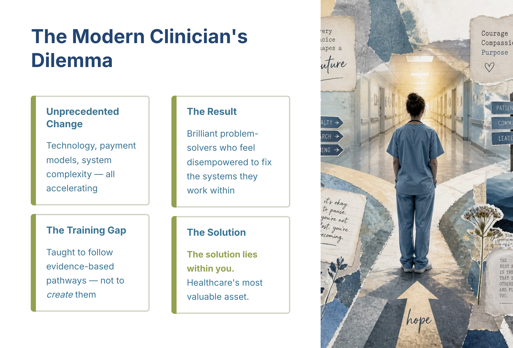
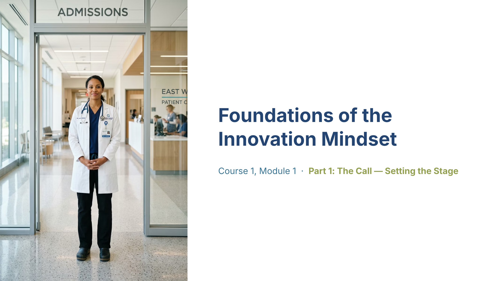
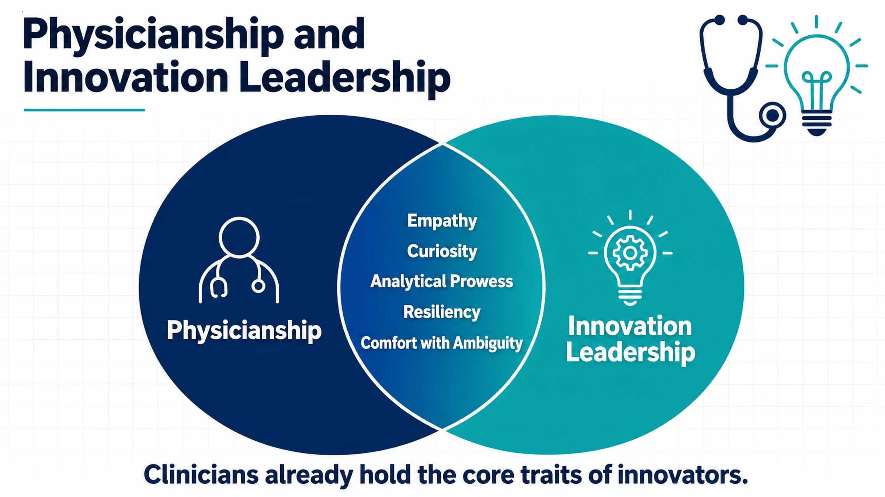
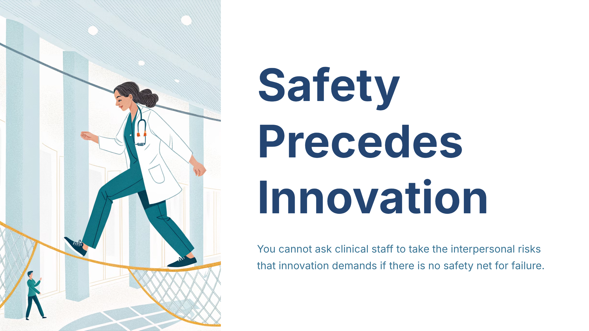

HIL 2026 APC Crossroads — Blueprint palette
The 'B' counterpart to the standard-'A' crossroads style: the SAME calm clinician-crossroads illustration (recraft-v3), re-themed with Blueprint Editorial for a cooler-palette A/B choice at the Storyboard gate.
Use when: As the 'B' option paired with crossroads-A when the operator wants to choose between two palette treatments of the same style.
no live render
HIL 2026 APC Crossroads — Blueprint (Studio)
CANDIDATE — trial style, not yet promoted
The Studio-mode companion of the crossroads-blueprint style: the SAME cooler Blueprint Editorial palette and clean-Western recraft-v3 illustration, delivered as a full-bleed 16:9 Studio image-card (title + key data embedded IN the illustration) rather than Classic typography.
Use when: A slide's meaning lives in one bold full-bleed illustration with embedded text and the Blueprint palette is wanted.

HIL 2026 APC Crossroads Bread and Butter
The everyday workhorse: the crossroads clinician register with source text PRESERVED verbatim, full GPT Image illustration, on a 16:9 frame - a dependable general-purpose style.
Use when: Most narrated lessons where the source wording and any figures must stay verbatim on the slide (preserve) and a full-strength illustration is wanted, on a 16:9 frame.

HIL 2026 APC Crossroads Classic
The new standard 'A' style: a calm clinician-crossroads register on the Tejal theme with GPT Image 2 Mini illustration — condensed prose, spacious white cards, and on-message metaphor imagery driven by the slide's Illustration brief.
Use when: Opening or case-for-change slides where a clinician-facing crossroads metaphor should feel accessible, clean, and emotionally hopeful.

HIL 2026 APC Crossroads Digital Collage
The crossroads standard-'A' style with its art style changed to Digital Collage: same Tejal theme, GPT Image 2 Mini, condensed prose and Fluid pages — only the illustration register changes, for a distinct A/B or roster option.
Use when: When a richer, collage-textured illustration register is wanted while keeping the crossroads style's calm clinical structure.

HIL 2026 APC Crossroads Magazine
The magazine-editorial variant of the standard 'A' crossroads style: the same Tejal clinician register rendered as AI "Magazine" art (Nano Banana 2 Mini) with condensed prose on a widescreen 16:9 editorial frame.
Use when: Slides that should read like a modern magazine feature - a strong image with a concise editorial caption on a widescreen frame.

HIL 2026 APC Studio Image Card
Full-bleed Studio template look where the image card itself carries the title and key data; the template is the sole style authority.
Use when: A slide's meaning lives in one full-bleed illustration with embedded text.

HIL 2026 APC Videographic Glance
The rapid-fire glance register on the model-hunt-winning recraft-v3 illustration model: one glanced beat per card, a short narrative line in large display type, and one anchored Western-neutral visual - screens turning every few seconds under a normal voiceover pace.
Use when: Narrated lessons where momentum and retention matter more than reference density; openers, case-for-change arcs, motivational spines. EARMARK (operator, session-07): preferred as a 'B' COMPANION TRACK to an expository source style.